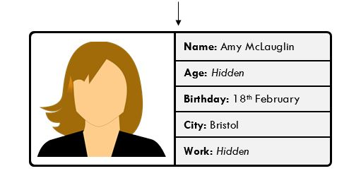

2. Encapsulation |
| In this chapter you will learn: |
|---|
|
As mentioned in Chapter 1, encapsulation is the idea of grouping data and subroutines to make a program easier to work on and understand. In object-oriented programming, encapsulation is achieved by using classes. A class should only contain the attributes and methods that it needs, and none of the logic of one class should depend on the internal processing in another class.
Imagine a company has a system that stores various information about different employees. If the system does not use encapsulation, any data can be used or altered in any part of the program. This is an issue for two reasons:
Take the above program based on Task 1. Notice how private and public keywords are used here. If an attribute or method is private, it can only be accessed from within the class. If an attribute or method is public, it can be used by other classes. In Task 1, the attribute accountPassword in the Account class is made private so that the Bank class cannot see passwords which it shouldn’t have access to. Instead, the Bank class must use the public method checkPassword to check whether a user has entered their password correctly. This is useful for security purposes (in a real-world system, the more a password is shared across the system, the more vulnerable it is to being stolen) and for encapsulating the program (the Bank class doesn’t need to know what the password is, it only needs to be able to check that a password is correct, so it shouldn’t have access to that data).

Private attributes can be hidden from other parts of the system.
There are many situations where you may want to hide some of the data being stored about a particular object.
When an attribute from another class is needed, instead of making that attribute public, you can create a public method that returns the value of the attribute. Similarly, to change the value of an attribute, you can create a public method to change its value rather than directly altering it. Methods that return the value of a private attribute are known as accessors (or 'getters'), and methods that alter the value of a private attribute are known as mutators (or 'setters'). These may at first appear unnecessary, but can be useful if you ever want to change the functionality of the class.
For example, imagine you have the following code:
The Display class directly accesses the clock’s currentTime attribute to display the time. This works fine, but if you wanted to make a change to how the clock’s time is displayed (e.g. by making it a 12-hour clock instead of a 24-hour clock, or changing whether seconds or milliseconds are displayed) and the Display class referred to currentTime in multiple places, then formatting or other checks would need to be added in multiple places throughout the Display class, which could mean changing a lot of code. The program could be instead be written as:
With this version of the program, the change could be made to the getTime accessor so that the Display class does not need to be updated. Accessors and mutators should not just be used to make a private attribute public, but to hide information from other classes or limit the ability of other classes to alter the attribute.
In C#, methods and attributes are made private by default, so:
is equivalent to:
while it is therefore not necessary to declare an attribute or method as private, it is still good practice to do so to make it clearer how you intend that attribute or method to be used.
| Q1 | Define the term encapsulation. (1 mark) |
|---|---|
| Q2 | Explain the difference between a private attribute or method and a public attribute or method. (2 marks) |
| Q3 | Explain one reason why an attribute may be made private. (1 mark) |
| Q4 | Define the terms accessor and mutator. (2 marks) |
| Q5 | Identify when accessors and mutators should be used. (2 marks) |
| Q6 | Explain why you might make an attribute public instead of using accessors and mutators. (2 marks) |
|
This activity uses the following files:
The Task 2 skeleton code is a system that manages a hotel and its staff. Customers are checked in and out of their rooms, and leave feedback depending on how their stay was (if they are successfully checked in or their room is clean they become happier with their stay, and if their room is overbooked or unclean they become less happy with their stay). Recreate the Task 2 non-encapsulated code so that it keeps the same functionality but is properly encapsulated. There should be classes for Hotel, Room, Customer, Manager, Receptionist and Cleaner. The manager should be responsible for processing feedback; the cleaner should be responsible for cleaning rooms; the receptionist should be responsible for checking customers in and out of their rooms. All attributes should be made private (although you may add any methods that you think are helpful). You may use the provided Task 2 encapsulated skeleton code, which provides a converted main method and constructors for each class that does not need to be altered. (15 marks) |